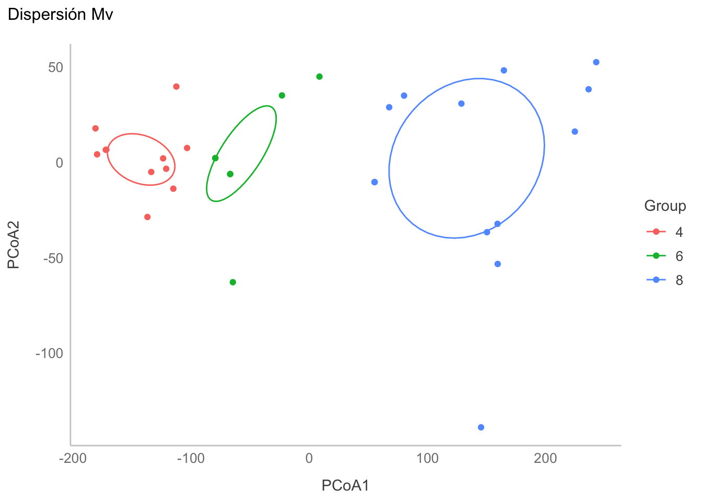
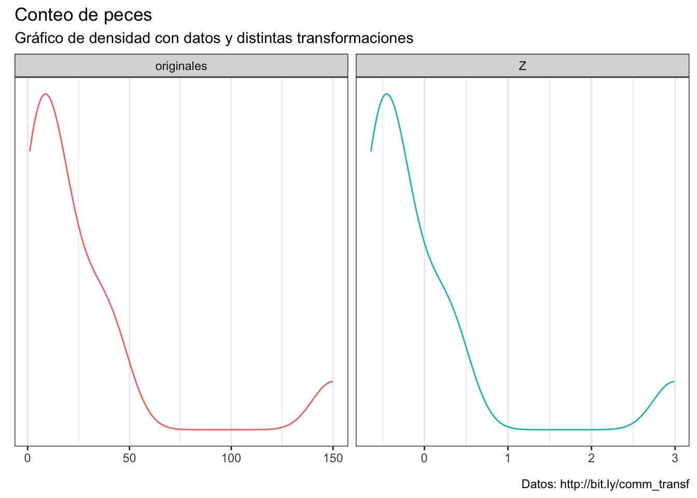
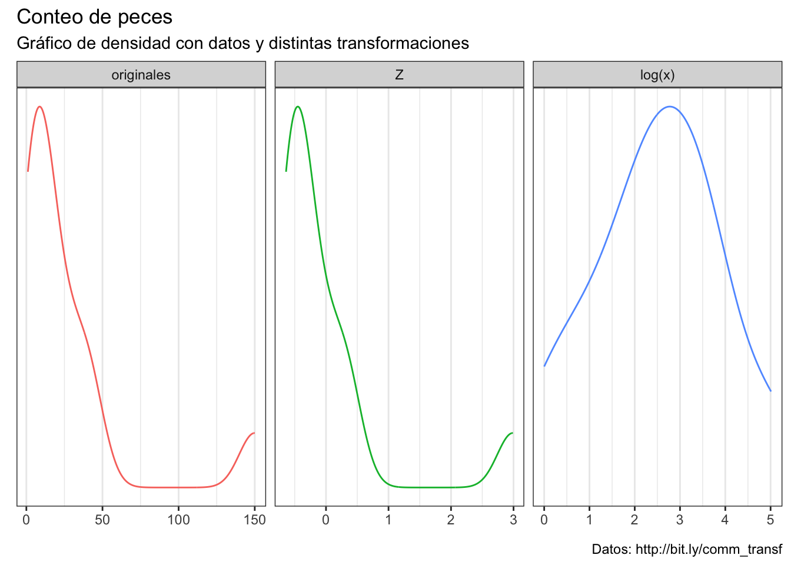

library(ggplot2)
library(corrplot)
library(PerformanceAnalytics)
library(MVN)
library(vegan)14 Técnicas multivariadas: Introducción
14.1 Librerías
14.2 Introducción
En esta sección final del curso vamos a abordar problemas que se tornan sumamente complejos, pues estaremos lidiando con más de dos variables a la vez. Esto usualmente deriva de que una variable sola no es suficientemene informativa, o de que el fenómeno analizado es el resultado de la “interacción” de distintas variables. De cualquier manera, esto nos lleva a tener múltiples mediciones de distintas instancias.
Nota
En esta sección nos vamos a referir a una instancia como un conjunto de mediciones de distintas variables de una misma unidad observacional. Pueden ser distintas morfometrías de un mismo cráneo, o mediciones satelitales de distintas variables ambientales en una coordenada dada (Figura 14.1).
Al momento de añadir nuevas variables vamos a modificar también el cómo trabajamos con nuestros datos. Mientras que con análisis uni o bivariados podíamos tener bases de datos en formato corto (una columna para cada grupo) o largo (una columna con la variable de respuesta y otra con la de agrupamiento), aquí vamos a tener matrices de datos, en donde cada renglón es una instancia (individuo, unidad muestral), y cada columna representa una variable o un atributo diferente:
14.2.1 Álgebra lineal
Esto me lleva a un (tal vez) tedioso recordatorio o una (tal vez) tediosa explicación sobre el álgebra lineal. ¿La razón? El tratar con cada columna por separado no solo es extremadamente ineficiente, sino que también nos lleva a incrementar la probabilidad de cometer errores de tipo I si nos ponemos a hacer pruebas uni o bivariadas para cada par de columnas (hablaremos más de esto en el Capítulo 16), por lo que es mejor trabajar con todas las variables al mismo tiempo.
Vamos a ver muchas matrices, algunas muy extensas por incluir las operaciones aritméticas correspondientes. NO te preocupes, el objetivo es solo que añadas a tu breviario cultural de dónde salen las matrices de covarianza y correlación.
Sean dos matricesn \(A\) y \(B\), cada una con \(m = 3\) renglones y \(n = 3\) columnas:
\[\begin{align*} A = \left[ \begin{matrix} a_{1,1} & a_{1,2} & a_{1,3}\\ a_{2,1} & a_{2,2} & a_{2,3}\\ a_{3,1} & a_{3,2} & a_{3,3}\\ \end{matrix} \right] \\ B = \left[ \begin{matrix} b_{1,1} & b_{1,2} & b_{1,3}\\ b_{2,1} & b_{2,2} & b_{2,3}\\ b_{3,1} & b_{3,2} & b_{3,3}\\ \end{matrix} \right] \end{align*}\]
Importante
En una matriz cada columna y cada renglón es un vector.
Tal y como vimos en el Capítulo 3, una de las operaciones más comunes al tratar con matrices es la transposición (denotada como \(^T\)); es decir, que las columnas se vuelvan renglones, y que los renglones se vuelvan columnas, tal que \(A_{(m,n)} \Rightarrow A^T_{(n,m)}\):
\[\begin{align*} A^T = \left[ \begin{matrix} a_{1,1} & a_{2,1} & a_{3,1}\\ a_{1,2} & a_{2,2} & a_{3,2}\\ a_{1,3} & a_{2,3} & a_{3,3}\\ \end{matrix} \right]\\ B^T = \left[ \begin{matrix} b_{1,1} & b_{2,1} & b_{3,1}\\ b_{1,2} & b_{2,2} & b_{3,2}\\ b_{1,3} & b_{2,3} & b_{3,3}\\ \end{matrix} \right] \end{align*}\]
También podemos querer hacer operaciones básicas. La suma y resta de matrices está dada por cada elemento, tal que \(S_{m,n} = (A_{m,n} \pm B_{m,n})\):
\[\begin{align*} S = \left[ \begin{matrix} (a_{1,1} \pm b_{1,1}) & (a_{1,2} \pm b_{1,2}) & (a_{1,3} \pm b_{1,3}) \\ (a_{2,1} \pm b_{2,1}) & (a_{2,2} \pm b_{2,2}) & (a_{2,3} \pm b_{2,3}) \\ (a_{3,1} \pm b_{3,1}) & (a_{3,2} \pm b_{3,2}) & (a_{3,3} \pm b_{3,3}) \\ \end{matrix} \right] \end{align*}\]
Importante
Para hacer una suma o resta de dos matrices es necesario que \((m_A,n_A) = (m_B,n_B)\)
La multiplicación, desafortunadamente, no es tan simple. Aquí tenemos dos tipos de productos: el producto escalar (interno; \(E_{m,n} = (A_m \cdot B_n)\)) y el producto externo. Solo vamos a explicar el primero porque es el que nos interesa para los fines del curso. En este la operación está dada como \(E_{m,n} = \sum a_{m} \times b_n\); es decir, el valor de cada celda de la matriz es el resultado de sumar los productos de los valores de la columna \(m\) por los valores del renglón \(n\):
\[\begin{align*} E = \left[ \begin{matrix} ( (a_{1,1} \times b_{1,1}) + (a_{1,2} \times b_{2,1}) + (a_{1,3} \times b_{3,1}) )& ( (a_{1,1} \times b_{1,2}) + (a_{1,2} \times b_{2,2}) + (a_{1,3} \times b_{3,2}) )& ( (a_{1,1} \times b_{1,3}) + (a_{1,2} \times b_{2,3}) + (a_{1,3} \times b_{3,3}) )\\ ( (a_{2,1} \times b_{1,1}) + (a_{2,2} \times b_{2,1}) + (a_{2,3} \times b_{3,1}) )& ( (a_{2,1} \times b_{1,2}) + (a_{2,2} \times b_{2,2}) + (a_{2,3} \times b_{3,2}) )& ( (a_{2,1} \times b_{1,3}) + (a_{2,2} \times b_{2,3}) + (a_{2,3} \times b_{3,3}) )\\ ( (a_{3,1} \times b_{1,1}) + (a_{3,2} \times b_{2,1}) + (a_{3,3} \times b_{3,1}) )& ( (a_{3,1} \times b_{1,2}) + (a_{3,2} \times b_{2,2}) + (a_{3,3} \times b_{3,2}) )& ( (a_{3,1} \times b_{1,3}) + (a_{3,2} \times b_{2,3}) + (a_{3,3} \times b_{3,3}) )\\ \end{matrix} \right] \end{align*}\]
Importante
Debido a que estamos multiplicando los renglones (\(m\)) de una matriz por las columnas (\(n\)) de la otra, es necesario que \(m_A = n_B\).
¿Para qué puse todos esos chorizos de operaciones matriciales? Créeme que no fue para presumir que puedo escribir matrices en LaTeX/Markdown, sino porque son la base de (posiblemente) las estructuras más importantes para las técnicas multivariadas: las matrices de covarianzas y de correlación.
14.3 De \(\sigma\) a \(\Sigma\): La matriz de covarianzas
Empecemos por la covarianza pues, como recordarás del Capítulo 11, la correlación es solo un cociente de la covarianza y, de hecho, comenzemos recordando qué es matemáticamente la covarianza entre dos variables: la esperanza matemática (\(E\); el promedio, vamos) del producto de la diferencia de cada valor de cada variable menos la media de la variable:
\[ Cov(x,y) = E[(x-\mu_x)(y-\mu_y)] \]
Si la covarianza de \(x\) y \(y\) es el producto de centrar (retirarle la media) a cada variable, podemos ver a la varianza como la covarianza de una variable con respecto a sí misma:
\[ Cov(y,y) = Var(y) = \sigma^2(y) \Rightarrow E[(y-\mu_y)(y-\mu_{y})] = E[(y-\mu_y)^2] \] Estos son las covarianzas y varianzas poblacionales, pero recordarás que nosotros trabajamos con las varianzas (y por extensión covarianzas) muestrales, lo que se vería como:
\[\begin{align*} s^2 = cov(y,y) = \frac{\sum_i^n(y_i-\bar{y})^2}{n-1} \\ cov(x,y) = \frac{\sum_i^n(x_i-\bar{x})(y_i-\bar{y})}{n-1} \end{align*}\]
Al ser esto así podemos entonces calcular, al mismo tiempo, todas las covarianzas y varianzas. ¿Cómo? Siguiendo tres pasos:
- Centrar la matriz (\(a_{m,n}-\bar{a}_n\))
- Multiplicar su transpuesta por la matriz original (\(C^T_A \cdot C_A\)):
Importante
Recuerda que para realizar el producto interno de dos matrices necesitamos que \(m_a = n_b\), por lo que el orden de la multiplicación debe de ser, forzosamente, \(C^T_A \cdot C_A\); es decir, la transpuesta por la original
\[\begin{align*} C^T_A = \left[ \begin{matrix} (a_{1,1} - \bar{a}_1) & (a_{2,1} - \bar{a}_1) \\ (a_{1,2} - \bar{a}_2) & (a_{2,2} - \bar{a}_2) \\ \end{matrix} \right] \cdot C_A = \left[ \begin{matrix} (a_{1,1} - \bar{a}_1) & (a_{1,2} - \bar{a}_2) \\ (a_{2,1} - \bar{a}_1) & (a_{2,2} - \bar{a}_2) \\ \end{matrix} \right] = \end{align*}\]
\[\begin{align*} = \left[ \begin{matrix} [((a_{1,1} - \bar{a}_1) \times (a_{1,1} - \bar{a}_1)) + ((a_{2,1} - \bar{a}_1) \times (a_{2,1} - \bar{a}_1))] & [((a_{1,1} - \bar{a}_1) \times (a_{1,2} - \bar{a}_2)) + ((a_{2,1} - \bar{a}_1) \times (a_{2,2} - \bar{a}_2))] \\ [((a_{1,2} - \bar{a}_2) \times (a_{1,1} - \bar{a}_1)) + ((a_{2,2} - \bar{a}_2) \times (a_{2,1} - \bar{a}_1))] & [((a_{1,2} - \bar{a}_2) \times (a_{1,2} - \bar{a}_2)) + ((a_{2,2} - \bar{a}_2) \times (a_{2,2} - \bar{a}_2))] \\ \end{matrix} \right] \end{align*}\]
Importante
Si pones atención a las celdas que están en la diagonal te darás cuenta de que los productos que conforman la suma son iguales, por lo que podemos simplificarlos como como productos cuadráticos.
- Multiplicar por \(\frac{1}{m-1}\), para completar nuestra varianza muestral; es decir, vamos a dividir cada elemento de nuestra matriz sobre el número de observaciones (renglones) que tenemos menos uno (grados de libertad):
\[\begin{align*} = \left[ \begin{matrix} [(a_{1,1}-\bar{a}_1)^2+(a_{2,1}-\bar{a}_1)^2] & [((a_{1,1} - \bar{a}_1) \times (a_{1,2} - \bar{a}_2)) + ((a_{2,1} - \bar{a}_1) \times (a_{2,2} - \bar{a}_2))] \\ [((a_{1,2} - \bar{a}_2) \times (a_{1,1} - \bar{a}_1)) + ((a_{2,2} - \bar{a}_2) \times (a_{2,1} - \bar{a}_1))] & [(a_{1,2}-\bar{a}_2)^2+(a_{2,2}-\bar{a}_2)^2] \\ \end{matrix} \right] \cdot \frac{1}{2-1} \end{align*}\]
Si simplificamos todo esto, tenemos nuestra matriz de covarianzas:
\[\begin{align*} \Sigma = \left[ \begin{matrix} s^2(x) & cov(x,y) \\ cov(x,y) & s^2(y) \end{matrix} \right] \end{align*}\]
14.4 Matriz de correlación
Ahora recordemos que la correlación entre dos variables es el resultado de dividir su covarianza entre el producto de sus desviaciones estándar (que ez la raíz cuadrada de la varianza), tal que:
\[ cor(x,y) = \frac{cov(x,y)}{\sigma_x \sigma_y} = \frac{\sum X_cY_c}{\sqrt{\sum X^2_c \sum Y^2_c}} \]
Partiendo de esta definición, calcular la matriz de correlación también se reduce a tres pasos:
- Centrar y estandarizar la matriz; es decir, a cada valor le vamos a restar la media de su columna y lo vamos a dividir entre la desviación estándar de su columna \(\left(\frac{a_{m,n}-\bar{a}_n}{\sigma_n} \right)\).
- Multiplicar la matriz transpuesta por la matriz original (\(E_A^T \cdot E_A\)).
- Multiplicar por \(\frac{1}{m}\)
\[\begin{align*} E^T_A = \left[ \begin{matrix} \frac{a_{1,1} - \bar{a}_1}{\sigma_1} & \frac{a_{2,1} - \bar{a}_1}{\sigma_1} \\ \frac{a_{1,2} - \bar{a}_2}{\sigma_2} & \frac{a_{2,2} - \bar{a}_1}{\sigma_2} \\ \end{matrix} \right] \cdot E_A = \left[ \begin{matrix} \frac{a_{1,1} - \bar{a}_1}{\sigma_1} & \frac{a_{1,2} - \bar{a}_2}{\sigma_2} \\ \frac{a_{2,1} - \bar{a}_1}{\sigma_1} & \frac{a_{2,2} - \bar{a}_2}{\sigma_2} \\ \end{matrix} \right] \cdot \frac{1}{2} = \\ r = \left[ \begin{matrix} 1 & cor(x,y) \\ cor(x,y) & 1 \end{matrix} \right] \end{align*}\]
Y con esto tenemos nuestra matriz de correlaciones.
Importante
Si te das cuenta, el orden de los pasos permite que aprovechemos las características del producto matricial interno para poder estimar todas las covarianzas o correlaciones “juntas”. Si bien es cierto que a mano puede sonar a que no hay mucha diferencia, esto simplifica mucho las cosas cuando empezamos a escalar en los procedimientos.
14.5 Matrices de covarianza y corrlación en R
Afortunadamente para nosotros, para obtener estas matrices en R utilizaremos las mismas funciones que para el cálculo individual (y por consiguiente podremos calcular también la \(\rho\) de Spearman). Utilicemos como ejemplo la base de datos mtcars:
head(mtcars)Ahora estimemos ambas matrices:
# Matriz de covarianzas
cov_mat <- cov(mtcars)
# Matriz de correlación
cor_mat <- cor(mtcars)
# Las imprimimos en pantalla
cov_mat mpg cyl disp hp drat wt
mpg 36.324103 -9.1723790 -633.09721 -320.732056 2.19506351 -5.1166847
cyl -9.172379 3.1895161 199.66028 101.931452 -0.66836694 1.3673710
disp -633.097208 199.6602823 15360.79983 6721.158669 -47.06401915 107.6842040
hp -320.732056 101.9314516 6721.15867 4700.866935 -16.45110887 44.1926613
drat 2.195064 -0.6683669 -47.06402 -16.451109 0.28588135 -0.3727207
wt -5.116685 1.3673710 107.68420 44.192661 -0.37272073 0.9573790
qsec 4.509149 -1.8868548 -96.05168 -86.770081 0.08714073 -0.3054816
vs 2.017137 -0.7298387 -44.37762 -24.987903 0.11864919 -0.2736613
am 1.803931 -0.4657258 -36.56401 -8.320565 0.19015121 -0.3381048
gear 2.135685 -0.6491935 -50.80262 -6.358871 0.27598790 -0.4210806
carb -5.363105 1.5201613 79.06875 83.036290 -0.07840726 0.6757903
qsec vs am gear carb
mpg 4.50914919 2.01713710 1.80393145 2.1356855 -5.36310484
cyl -1.88685484 -0.72983871 -0.46572581 -0.6491935 1.52016129
disp -96.05168145 -44.37762097 -36.56401210 -50.8026210 79.06875000
hp -86.77008065 -24.98790323 -8.32056452 -6.3588710 83.03629032
drat 0.08714073 0.11864919 0.19015121 0.2759879 -0.07840726
wt -0.30548161 -0.27366129 -0.33810484 -0.4210806 0.67579032
qsec 3.19316613 0.67056452 -0.20495968 -0.2804032 -1.89411290
vs 0.67056452 0.25403226 0.04233871 0.0766129 -0.46370968
am -0.20495968 0.04233871 0.24899194 0.2923387 0.04637097
gear -0.28040323 0.07661290 0.29233871 0.5443548 0.32661290
carb -1.89411290 -0.46370968 0.04637097 0.3266129 2.60887097cor_mat mpg cyl disp hp drat wt
mpg 1.0000000 -0.8521620 -0.8475514 -0.7761684 0.68117191 -0.8676594
cyl -0.8521620 1.0000000 0.9020329 0.8324475 -0.69993811 0.7824958
disp -0.8475514 0.9020329 1.0000000 0.7909486 -0.71021393 0.8879799
hp -0.7761684 0.8324475 0.7909486 1.0000000 -0.44875912 0.6587479
drat 0.6811719 -0.6999381 -0.7102139 -0.4487591 1.00000000 -0.7124406
wt -0.8676594 0.7824958 0.8879799 0.6587479 -0.71244065 1.0000000
qsec 0.4186840 -0.5912421 -0.4336979 -0.7082234 0.09120476 -0.1747159
vs 0.6640389 -0.8108118 -0.7104159 -0.7230967 0.44027846 -0.5549157
am 0.5998324 -0.5226070 -0.5912270 -0.2432043 0.71271113 -0.6924953
gear 0.4802848 -0.4926866 -0.5555692 -0.1257043 0.69961013 -0.5832870
carb -0.5509251 0.5269883 0.3949769 0.7498125 -0.09078980 0.4276059
qsec vs am gear carb
mpg 0.41868403 0.6640389 0.59983243 0.4802848 -0.55092507
cyl -0.59124207 -0.8108118 -0.52260705 -0.4926866 0.52698829
disp -0.43369788 -0.7104159 -0.59122704 -0.5555692 0.39497686
hp -0.70822339 -0.7230967 -0.24320426 -0.1257043 0.74981247
drat 0.09120476 0.4402785 0.71271113 0.6996101 -0.09078980
wt -0.17471588 -0.5549157 -0.69249526 -0.5832870 0.42760594
qsec 1.00000000 0.7445354 -0.22986086 -0.2126822 -0.65624923
vs 0.74453544 1.0000000 0.16834512 0.2060233 -0.56960714
am -0.22986086 0.1683451 1.00000000 0.7940588 0.05753435
gear -0.21268223 0.2060233 0.79405876 1.0000000 0.27407284
carb -0.65624923 -0.5696071 0.05753435 0.2740728 1.00000000Veámos la matriz de correlaciones gráficamente:
corrplot::corrplot(cor_mat, method = "ellipse", type = "upper")
Ahora utilicemos una función que, en un solo paso, computará la matriz de correlación, realizará una prueba de significancia para cada una y además nos presentará la matriz de manera gráfica:
# Descarga la función desde esa url y la carga en memoria
source("http://www.sthda.com/upload/rquery_cormat.r")
# Para fines prácticos se extrae un subconjunto de las columnas
mydata <- mtcars[, c(1,3,4,5,6,7)]
# Se aplica la función
rquery.cormat(mydata)$r
hp disp wt qsec mpg drat
hp 1
disp 0.79 1
wt 0.66 0.89 1
qsec -0.71 -0.43 -0.17 1
mpg -0.78 -0.85 -0.87 0.42 1
drat -0.45 -0.71 -0.71 0.091 0.68 1
$p
hp disp wt qsec mpg drat
hp 0
disp 7.1e-08 0
wt 4.1e-05 1.2e-11 0
qsec 5.8e-06 0.013 0.34 0
mpg 1.8e-07 9.4e-10 1.3e-10 0.017 0
drat 0.01 5.3e-06 4.8e-06 0.62 1.8e-05 0
$sym
hp disp wt qsec mpg drat
hp 1
disp , 1
wt , + 1
qsec , . 1
mpg , + + . 1
drat . , , , 1
attr(,"legend")
[1] 0 ' ' 0.3 '.' 0.6 ',' 0.8 '+' 0.9 '*' 0.95 'B' 1Otra alternativa es utilizar la función chart.Correlation(data, histogram) de la librería PerformanceAnalytics, en la cual se muestran todos resultados en una misma gráfica:
PerformanceAnalytics::chart.Correlation(mydata, histogram = T, pch = 19)Warning in par(usr): argument 1 does not name a graphical parameter
Warning in par(usr): argument 1 does not name a graphical parameter
Warning in par(usr): argument 1 does not name a graphical parameter
Warning in par(usr): argument 1 does not name a graphical parameter
Warning in par(usr): argument 1 does not name a graphical parameter
Warning in par(usr): argument 1 does not name a graphical parameter
Warning in par(usr): argument 1 does not name a graphical parameter
Warning in par(usr): argument 1 does not name a graphical parameter
Warning in par(usr): argument 1 does not name a graphical parameter
Warning in par(usr): argument 1 does not name a graphical parameter
Warning in par(usr): argument 1 does not name a graphical parameter
Warning in par(usr): argument 1 does not name a graphical parameter
Warning in par(usr): argument 1 does not name a graphical parameter
Warning in par(usr): argument 1 does not name a graphical parameter
Warning in par(usr): argument 1 does not name a graphical parameterUn comentario final al respecto de estas matrices es que, además de ser la base de las técnicas multivariadas, nos permiten evaluar la asociación entre nuestras variables sin comprometer un modelo predictivo, a la vez que nos permitirán hacer un filtrado de nuestras variables para evitar autocorrelaciones o incluir variables poco informativas, aunque de esto hablaremos más adelante.
14.6 Normalidad multivariada
Para analizar si nuestros datos multivariados se ajustan a una distribución normal multivariada utilizaremos la librería MVN, cuya función mvn(data, mvnTest, multivariatePlot) nos permite realizar una serie de pruebas tanto multi como univariadas:
14.6.1 Prueba de Mardia (1970)
Consiste en analizar si los momentos de la distribución Mv de los datos difieren de los esperados de una distribución Normal Mv (Mardia 1970), las hipótesis nulas son:
- \(H_0: S_{obs} = S_{NMv_{µ, \Sigma}}\)
- \(H_0: K_{obs} = K_{NMv_{µ, \Sigma}}\)
Donde \(\mu\) representa el vector de medias de cada variable y \(\Sigma\) la matriz de covarianzas.
Al realizar esta prueba vemos que la distribución Mv observada tiene una curtosis adecuada, aunque se encuentra fuertemente sesgada. Si analizamos los datos univariados vemos que en apariencia 2/6 variables presentan normalidad univariada.
mvntest <- MVN::mvn(mydata, mvnTest = "mardia")
mardia_test <- mvntest$multivariateNormality
unitest <- mvntest$univariateNormality
mardia_testunitest14.6.2 Prueba de Henze-Zirkler
Si observamos con atención los valores de p, veremos que hay algunos que se encuentran cercanos al umbral de 0.05 por lo que un análisis a partir de los cuantiles de la distribución puede ser una alternativa más informativa. Para ello podemos utilizar la prueba de Henze-Zirkler. Esta prueba considera una hipótesis compuesta, en la cual la distribución de X es una distribución normal no degenerada, cuyos resultados son consistentes contra cualquier distribución alternativa no normal (por ello compuesta). La representación está dada en términos de \(L^2\) (Distancia de Mahalanobis, más adelante hablaremos sobre medidas de distancia). Al ser una prueba de bondad de ajuste (observado vs. esperado), el estadístico de prueba sigue una distribución \(\chi^2\) (Henze y Zirkler 2007).
Aplicandola con mvn() vemos que también sugiere una falta de normalidad, lo cual podemos comprobar al ver el gráfico Cuantil-Cuantil
hz_test <- MVN::mvn(mydata, mvnTest = "hz",
multivariatePlot = "qq")$multivariateNormalityhz_testEse gráfico, aunque informativo, puede trabajarse para hacerse más agradable a la vista utilizando ggplot2 utilizando la siguiente función personalizada creada a partir del código utilizado para la gráfica anterior:
# Funciones personalizadas:
# Extraida de la función mvn(multivariatePlot = "qq") para un gráfico QQ
# para normalidad multivariada utilizando la distancia de mahalanobis
ji2_plot <- function(df){
# Datos
n <- dim(mydata)[1] # número de datos
p <- dim(mydata)[2] # número de grupos
# Centramos los datos (a-µ(a)) sin escalarlos (sin dividir por su \sigma)
dif <- scale(mydata, scale = F)
# Cálculo de la distancia de mahalanobis^2
d <- diag(dif %*% solve(cov(mydata), tol = 1e-25) %*% t(dif))
r <- rank(d) # Asignación de rangos a las distancias
# Obtención de los cuantiles teóricos según la distribución ji^2
ji2 <- qchisq((r - 0.5)/n, p)
# Reunimos los objetos en un data.frame para graficar con ggplot2
ji2_plot_data <- data.frame(d, ji2)
# Graficado
library(ggplot2)
ji2_qq <- ggplot(data = ji2_plot_data, aes(x = d, y = ji2)) +
geom_point(colour = "deepskyblue4", alpha = 0.5, size = 4) +
geom_abline(slope = 1,
colour = rgb(118,78,144,
maxColorValue = 255),
size = 1) +
labs(title =
bquote("Gráfico QQ de" ~~ {chi^2} ~~ ", g.l = "~ .(p)),
subtitle = bquote("Distancia de Mahalanobis ("~{D^2}~")
vs. Cuantiles teóricos"),
x = element_blank(),
y = element_blank(),
caption = "Basado en mvn(..., multivariatePlot == \"qq\")"
)
return(ji2_qq)
}qqjiplot <- ji2_plot(mydata) + theme_bw()
qqjiplot
14.6.3 Prueba de Royston
Esta prueba es una extensión multivariada de la prueba por excelencia para la normalidad univariada: la prueba de Shapiro-Wilk’s. Originalmente propuesta en 1983, aunque fue corregida/ampliada por el mismo autor en 1992 (Royston vs. otras). Funciona mejor para muestras pequeñas, aunque no se recomienda emplearla con menos de 3 observaciones o con más de 2000.
Su implementación sigue la misma línea que los casos anteriores. Si analizamos el valor de p, veremos que se encuentra en el límite de la significancia a un \(\alpha = 0.05\); sin embargo, si consideramos también el gráfico QQ que elaboramos anteriormente, no podemos asumir que esas desviaciones sean despreciables.
royston_test <- mvn(mydata, mvnTest = "royston")$multivariateNormality
royston_test14.7 Igualdad de dispersiones multivariadas
Conforme vayamos avanzando en el curso veremos que, entre los supuestos de algunas pruebas, vamos a encontrar el de “igualdad de dispersiones multivariadas”; i.e., igualdad de matrices de covarianza. Una alternativa es utilizar la prueba de Anderson (2005), la cual es un análogo multivariado a la prueba de Levene para la homogeneidad de varianzas. La prueba de hipótesis está basada en distancias no euclidianas entre los grupos (i.e., no utiliza el teorema de Pitágoras :( ). Un dato curioso es que este método también se ha utilizado para evaluar la diversidad \(\beta\) de una comunidad.
Para su implementación en R utilizaremos la función betadisper de la librería vegan. Al ser un método basado en distancias, primero habrá que transformar los datos a una matriz de distancias utilizando alguna de las funciones dist, betadiver o vegdist. Necesitamos, además, establecer los grupos a utilizar.
library(vegan)
dist_mat <- vegan::vegdist(mydata, method = "bray", type = c("median"))
groups <- as.character(mtcars$cyl)
# Por fines prácticos no se muestra,
# ya que calcula una distancia entre cada par de instancias o grupos,
# resultando en matrices sumamente grandes
#dist.matAhora utilizaremos la función betadisper para comprobar la homogeneidad de dispersiones entre los distintos cilindros. Esta prueba únicamente genera el espacio multivariado para realizar la prueba, realizando un ACP para reducir la dimensionalidad de la base de datos y estimar las distancias a la mediana de cada uno de los grupos establecidos.
# Realizar el procedimiento
disp_mv <- vegan::betadisper(dist_mat,
group = groups, type = "median")
disp_mv
Homogeneity of multivariate dispersions
Call: vegan::betadisper(d = dist_mat, group = groups, type = "median")
No. of Positive Eigenvalues: 18
No. of Negative Eigenvalues: 13
Average distance to median:
4 6 8
0.09587 0.06171 0.08251
Eigenvalues for PCoA axes:
(Showing 8 of 31 eigenvalues)
PCoA1 PCoA2 PCoA3 PCoA4 PCoA5 PCoA6 PCoA7 PCoA8
1.392690 0.091453 0.040689 0.037914 0.025951 0.009016 0.007642 0.004007 Si realizamos la prueba de hipótesis vemos que, al parecer, las dispersiones multiviariadas son similares entre los 3 grupos.
# Prueba de hipótesis
anova(disp_mv)Ahora veamos las dispersiones gráficamente:
# Análisis gráfico
plot(disp_mv, ellipse = T, hull = F)
Al analizar el gráfico vemos que las dispersiones son similares; sin embargo, pareciera que la dispersión del grupo 6 es más pequeña que la de los grupos 4 y 8, en tonces realicemos las comparaciones pareadas univariadas con la prueba Honesta de Diferencias Significativas de Tukey (TukeyHSD). Los resultados sugieren que las dispersiones con un \(\alpha = 0.05\) son similares, lo cual a su vez pudiera sugerir que hay un equilibrio entre las dispersiones en el eje x con respecto a las dispersiones en el eje y.
mod_HSD <- TukeyHSD(disp_mv)
mod_HSD <- data.frame(mod_HSD$group, comp = dimnames(mod_HSD$group)[[1]])
mod_HSDAl igual que en el caso anterior podemos utilizar ggplot para personalizar el gráfico:
hsd_plot <- ggplot(data = mod_HSD,
aes(x = comp)) +
geom_point(aes(y = diff),
colour = "deepskyblue4",
size = 4,
alpha = 0.7)+
geom_errorbar(aes(ymin = lwr, ymax = upr),
colour = "deepskyblue4") +
theme_bw() +
labs(title = "Diferencias en dispersión multivariada e IC",
subtitle = "Prueba HSD de Tukey",
x = "Grupos",
y = element_blank()) +
scale_y_continuous(breaks = NULL) +
geom_hline(yintercept = 0,
colour = rgb(118,78,144, maxColorValue = 255),
linetype = "dashed") +
annotate("text",
x = 0.5, y = 0+0.005,
label = as.character(0),
colour = rgb(118,78,144, maxColorValue = 255)
) +
geom_hline(yintercept = max(mod_HSD$upr),
colour = "firebrick", alpha = 0.7,
linetype = "dashed") +
annotate("text",
x = 0.5, y = max(mod_HSD$upr)-0.005,
label = as.character(round(max(mod_HSD$upr),2)),
colour = "firebrick"
) +
geom_hline(yintercept = min(mod_HSD$lwr),
colour = "firebrick", alpha = 0.7,
linetype = "dashed") +
annotate("text",
x = 0.5, y = min(mod_HSD$lwr)-0.005,
label = as.character(round(min(mod_HSD$lwr),2)),
colour = "firebrick"
) +
geom_text(aes(label = paste("p = ", round(p.adj,2)), y = 0),
stat = "identity",
nudge_y = max(mod_HSD$upr)+0.005, colour = "gray50")
hsd_plot
14.8 Implicaciones analíticas de la multidimensionalidad
Es importante mencionar que entre más incrementemos la dimensionalidad de nuestro problema, más difícil será resumir en un solo resultado las pruebas de nuestros análisis y, en consecuencia, deberemos de considerar distintas técnicas/estrategias que analicen nuestros datos desde distintas perspectivas antes de emitir un juicio o extraer conclusiones. Por esta razón, es sumamente importante que realicemos una selección de variables de manera rigurosa antes de comenzar nuestro análisis, ya que incluir variables innecesariamente únicamente incrementará la varianza de los datos sin aportarnos ninguna información adicional, causando desviaciones de la normalidad, modelos complejos sobre o infra ajustados y pérdidas de poder estadístico.
En cuanto a la normalidad, es importante mencionar que si nuestros datos en realidad no se ajustan, o se encuentran fuertemente desviados de la normalidad, las conclusiones que extraigamos serán únicamente sobre la tendencia más general de nuestros datos (Revisar: desigualdad/teorema de Chebyshev) y, en consecuencia, pueden no ser una representación completa de nuestras muestras. Si esto es importante o no, dependerá de nuesta pregunta de investigación y qué tan fino querramos que sea el análisis.
14.9 Transformaciones o deformaciones
Habiendo tocado el tema de la estandarización, hablemos también del resto de transformaciones. En general, podemos considerar que existen dos tipos de transformaciones:
- Aquellas que afectan la distribución de los datos (e.g., logarítmica)
- Aquellas que simplemente cambian los límites de la distribución original (e.g., MinMax)
¿Cuál utilizar? Dependerá de nuestros objetivos para hacerla, lo cual me lleva al punto de que: NINGUNA transformación debe de ser aplicada sin cuidado. Hay que tener en cuenta que, aunque no se cambie la distribución de los datos, el análisis ya no se realiza sobre los datos originales, lo cual puede causar errores de interpretación. Con esto no quiero decir que las transformaciones sean malas, solo que hay que emplearlas con una justificación y asegurarnos de re-transformar los datos antes de hacer inferencias.
Veamos algunas de las transformaciones más comunes y cuáles son sus consecuencias en los datos. Para ello, consideremos estos datos sin transformar, los cuales están altamente sesgados y, en consecuencia, bastante alejados de la normalidad:
# Función de graficado
kdeplots <- function(data, aes){
kdeplots <- ggplot(data, aes) +
geom_density(show.legend = F) +
theme_bw() +
labs(title = "Conteo de peces",
subtitle =
"Gráfico de densidad con datos y distrintas transformaciones",
caption = "Datos: http://bit.ly/comm_transf",
x = element_blank(),
y = element_blank()) +
scale_y_continuous(breaks = NULL)
return(kdeplots)
}
df <- data.frame(datos = c(38, 1, 13, 2, 13, 20, 150, 9, 28, 6, 4, 43),
transf = "originales")
kde_plots <- kdeplots(df, aes(datos, color = transf))
kde_plots
14.9.1 Estandarización
Veamos el efecto de estandarizar los datos; es decir, utilizar la distribución Z. La estandarización consiste en centrar la variable (restarle su media) y dividirla entre su desviación estándar. El resultado es la misma distribución, aunque los datos ahora se encuentran escalados e indican a cuantas SD de la media se encuentra cada punto.
df2 <- rbind(df, data.frame(datos = (df$datos-mean(df$datos))/sd(df$datos),
transf = "Z"))
kde_plots <- kdeplots(df2, aes(datos, color = transf)) +
facet_wrap(~transf, scales = "free")
kde_plots14.9.2 Transformación logarítmica
Posiblemente la transformación más conocida, utilizada y, en consecuencia, abusada. Se realiza aplicando la ecuación \(X_{log} = log_n(X)\). (OJO: si hay ceros será \(X_{log} = log_n(X+1)\), ya que el logaritmo de 0 no existe). Esta transformación cambia notablemente la distribución de los datos, acercándolos a una forma de campana. ¿Cuándo aplicarla? Cuando querramos forzar nuestros datos a una distribución normal para cumplir con los supuestos de alguna prueba paramétrica, linealizar los datos y, equivocadamente, ponerlos en la misma escala que otra variable. Con excepción del último caso, cualquiera de las formas está matemáticamente justificada, solo hay que tener en consideración que los datos no son los originales y que pueden no representar adecuadamente nuestro muestreo. Otro caso en el cual es válido utilizarlo es si queremos ver cuál es cuando tenemos distintos factores y nuestra variable de respuesta es el resultado de su interacción (producto) tal que \(Y = a \times b \times c \times d\times ... \times z\) (efecto multiplicativo y no aditivo), ya que el resultado es una distribución con forma log-normal que no es posible capturar con los datos originales. Su re-transformación es \(n^{X_{log}}\). Salvo en el último caso, recomiendo contrastar los resultados con una prueba no paramétrica utilizando los datos originales y ver cuáles son las diferencias.
df2 <- rbind(df2, data.frame(datos = log(df$datos), transf = "log(x)"))
kde_plots <- kdeplots(df2, aes(datos, color = transf)) +
facet_wrap(~transf, scales = "free")
kde_plots
14.9.3 Raíz cuadrada
Otra transformación muy empleada, consiste en en obtener la raíz cuadrada de cada uno de los datos (\(\sqrt{X}\), OJO: si hay valores negativos no se puede utilizar, hay que pasarlos a valores absolutos o añadir una constante para volverlos positivos). Veamos su efecto en la distribución. En este caso el cambio en la forma no es tan agresivo, y la consecuencia es únicamente que las diferencias entre los valores más altos y los más pequeños se redujo. Su re-transformación es: \(\sqrt{x}^2\). Su uso más común es con datos de conteo (abundancias, bacterias en una caja petri, etc.)
df2 <- rbind(df2, data.frame(datos = sqrt(df$datos), transf = "sqrt(x)"))
kde_plots <- kdeplots(df2, aes(datos, color = transf)) +
facet_wrap(~transf, scales = "free")
kde_plots
Con esto terminamos esta sesión. Sé que estuvo fuertemente cargada de teoría y matemática, pero es necesario que tengas al menos una noción de dónde surgen las cosas. No es necesario que te las aprendas de memoria, o que sepas calcular las matrices a mano, solo que entiendas la lógica detrás de los procedimientos para que no abuses de ellos. Como recompensa por llegar hasta aquí no hay ejercicio para esta sesión ;).